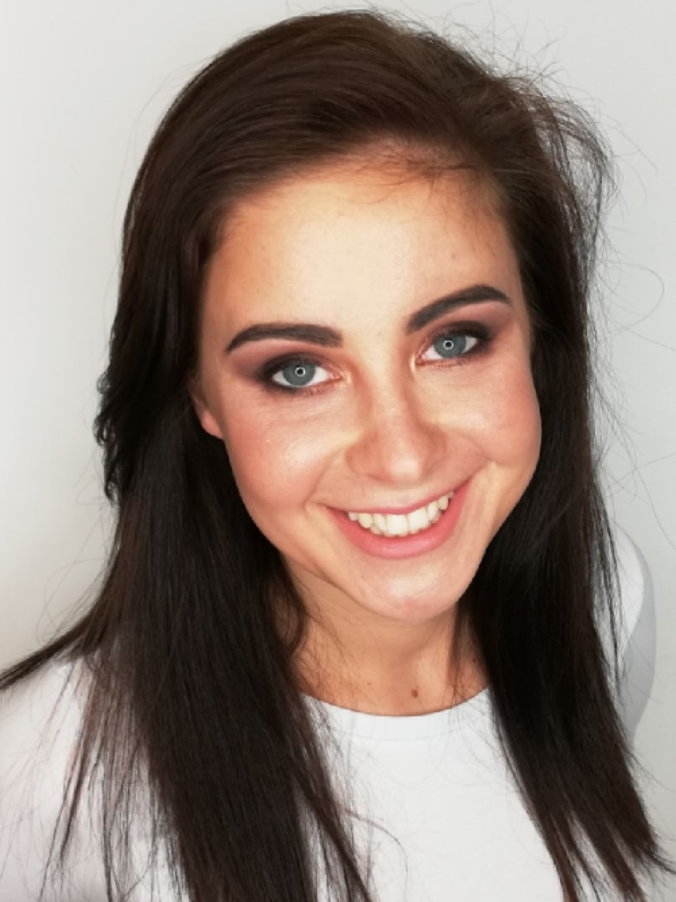
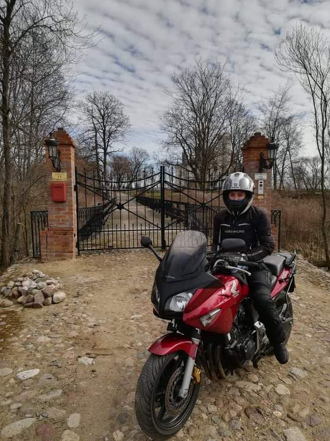
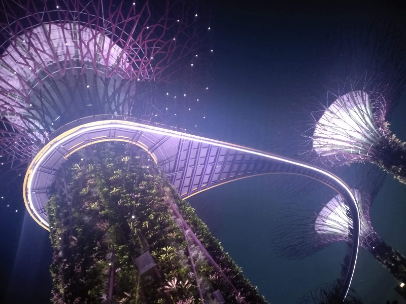
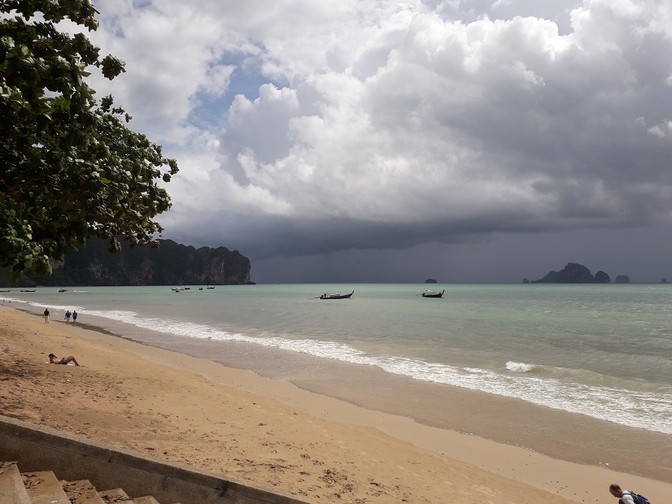
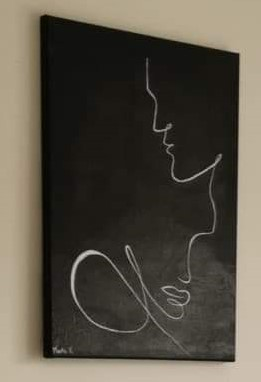
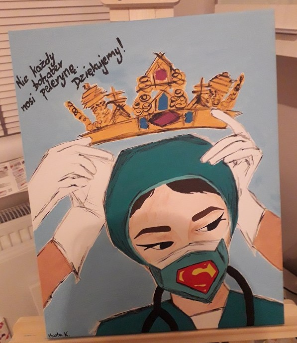
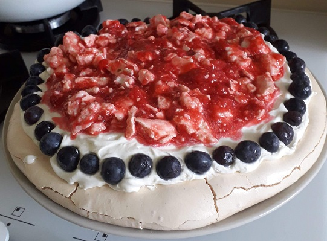
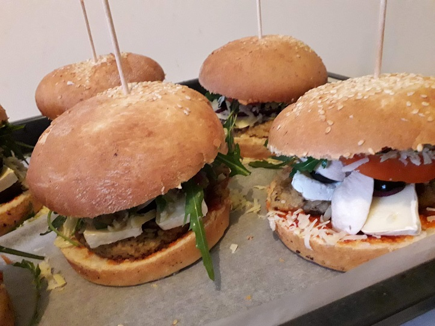
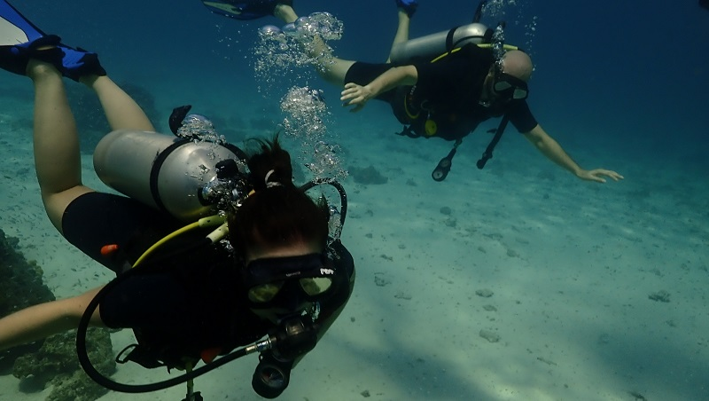

Hej, mam na imię Marta i uczę się programowania. Obecnie staram się rozwijać swoje umiejętności we Front-Endzie w oparciu o: HTML, CSS oraz JavaScript. Oprócz tego, jednocześnie staram się rozwijać umiejętności stricte programistyczne. Język, w którym programuję to Python, korzystam z niego do pisania Back-Endu w oparciu o framework Flask oraz do Automatyzacji i Web-Scrapingu z wykorzystaniem frameworka Selenium.

Jazda motocyklem
Od 6 lat jestem zapaloną motocyklistką. Uwielbiam dalekie trasy, z pięknymi, górskimi widokami :)

Podróże
Od jakiegoś czasu, poznaję również podróże innymi środkami transportu niż motocykl :)


Malarstwo
Od zawsze byłam pasjonatką kredek, pędzli, ołówków, farb, sztalugi- aktualnie uwielbiam akryl :)


Gotowanie
Jestem fanatyczką dobrego jedzenia. Nie ma dla mnie znaczenia czy przepis dotyczy dania na słodko czy na słono - ważne aby było pysznie :)


Nurkowanie
Zakochałam się również w podwodnym świecie :)
